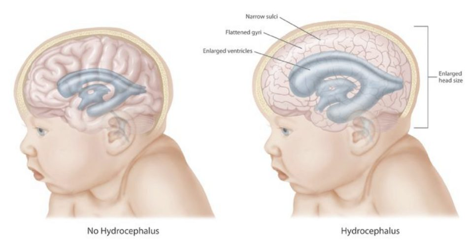

Información divulgativa. No sustituye la valoración de un profesional sanitario. Ante síntomas neurológicos bruscos (boca torcida, debilidad de un lado, dificultad para hablar) llama al 112.


Qué es
La hidrocefalia es una acumulación excesiva de líquido cefalorraquídeo en los ventrículos del cerebro, las cavidades por las que circula este líquido. El cerebro produce cada día alrededor de medio litro de líquido cefalorraquídeo, que circula por los ventrículos, baña el cerebro y la médula y se reabsorbe hacia la sangre. Si se bloquea su circulación o no se reabsorbe bien, los ventrículos se dilatan y comprimen el tejido cerebral. Ver meninges, ventrículos y líquido cefalorraquídeo.
Tipos
- Congénita o del recién nacido: 1-2 de cada 1.000 nacimientos. Se asocia a la espina bífida, a malformaciones, a hemorragias cerebrales en prematuros o a infecciones.
- Adquirida: tras una hemorragia (sobre todo la subaracnoidea), una meningitis, un traumatismo o por un tumor que obstruye el paso del líquido.
- Hidrocefalia normotensiva del adulto: en personas mayores, sin causa clara.
Según el mecanismo, puede ser obstructiva (un tapón en el camino del líquido) o comunicante (el líquido circula, pero no se reabsorbe).
Síntomas
En bebés: aumento rápido del tamaño de la cabeza, fontanela abombada, venas del cuero cabelludo marcadas, ojos que miran hacia abajo («en sol poniente»), irritabilidad, vómitos, somnolencia.
En niños mayores y adultos: dolor de cabeza, vómitos, visión borrosa o doble, somnolencia, dificultades de equilibrio. Una hidrocefalia aguda es una urgencia.
Hidrocefalia normotensiva: la tríada de Hakim
Descrita por el neurocirujano colombiano Salomón Hakim en 1965, afecta a personas mayores de 60 años y produce tres síntomas que avanzan lentamente:
- Alteración de la marcha: pasos cortos, pies separados, como «pegados al suelo», inestabilidad y caídas. Suele ser lo primero.
- Incontinencia urinaria o urgencia para orinar.
- Deterioro cognitivo: lentitud, apatía, falta de atención.
Es importante porque es una de las pocas causas de deterioro de la marcha y de la memoria que puede mejorar con cirugía. A menudo se confunde con el envejecimiento, el párkinson o el alzhéimer.
Diagnóstico
- Ecografía transfontanelar en bebés, y diagnóstico prenatal en la ecografía del embarazo.
- TC o resonancia: ventrículos dilatados.
- En la hidrocefalia normotensiva, punción lumbar evacuadora (tap test): se extraen 30-50 ml de líquido y se comprueba si la marcha mejora en las horas siguientes; o drenaje lumbar durante varios días.
Tratamiento
- Válvula de derivación: un tubo fino que lleva el exceso de líquido desde los ventrículos hasta el abdomen (derivación ventriculoperitoneal), donde se reabsorbe. Tiene una válvula que regula el flujo, a menudo programable desde fuera con un imán. Es el tratamiento más frecuente.
- Ventriculostomía endoscópica del tercer ventrículo: se abre un pequeño orificio en el suelo del tercer ventrículo para que el líquido salga sin necesidad de válvula. Útil en las hidrocefalias obstructivas.
- Tratar la causa cuando es posible (extirpar un tumor).
Las válvulas pueden obstruirse o infectarse y necesitar revisiones. Los portadores y sus familias deben conocer los síntomas de mal funcionamiento (dolor de cabeza, vómitos, somnolencia, empeoramiento de la marcha) y consultar con rapidez.
En la hidrocefalia normotensiva bien seleccionada, la válvula mejora la marcha en más del 70 % de los pacientes; la incontinencia y la memoria mejoran menos.
Ver neurocirugía.
Historia · Medicapedia
La historia de esta enfermedad
Cómo se describió, quién la estudió y cómo ha cambiado su tratamiento a lo largo de los siglos, en Medicapedia, nuestra enciclopedia hermana de historia de la medicina.
Fuentes
- Kahle KT, et al. Hydrocephalus in children. Lancet. 2016;387:788-99.
- Nakajima M, et al. Guidelines for management of idiopathic normal pressure hydrocephalus (third edition). Neurol Med Chir. 2021;61:63-97.
- Williams MA, Malm J. Diagnosis and treatment of idiopathic normal pressure hydrocephalus. Continuum. 2016;22:579-99.
- Hakim S, Adams RD. The special clinical problem of symptomatic hydrocephalus with normal cerebrospinal fluid pressure. J Neurol Sci. 1965;2:307-27.